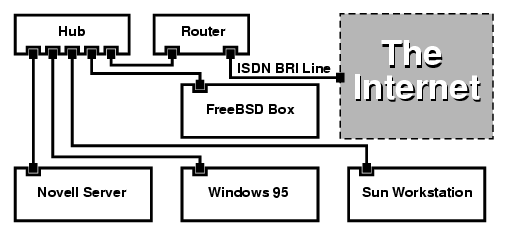

Ruby é uma linguagem de script orientada a objetos de código aberto inventada em meados dos anos 90 por Yukihiro Matsumoto. Ao contrário de linguagens como C e C++, uma linguagem de script não se comunica diretamente com o hardware. Ele é gravado em um arquivo de texto e depois analisado por um intérprete e transformado em código.

Rede Digital de Serviços Integrados (RDSI), Rede Digital Integrada de Serviços ou Rede Digital com Integração de Serviços (RDIS),[1] do inglês Integrated Service Digital Network (ISDN), é um conjunto de padrões de comunicação para transmissão digital simultânea de voz.